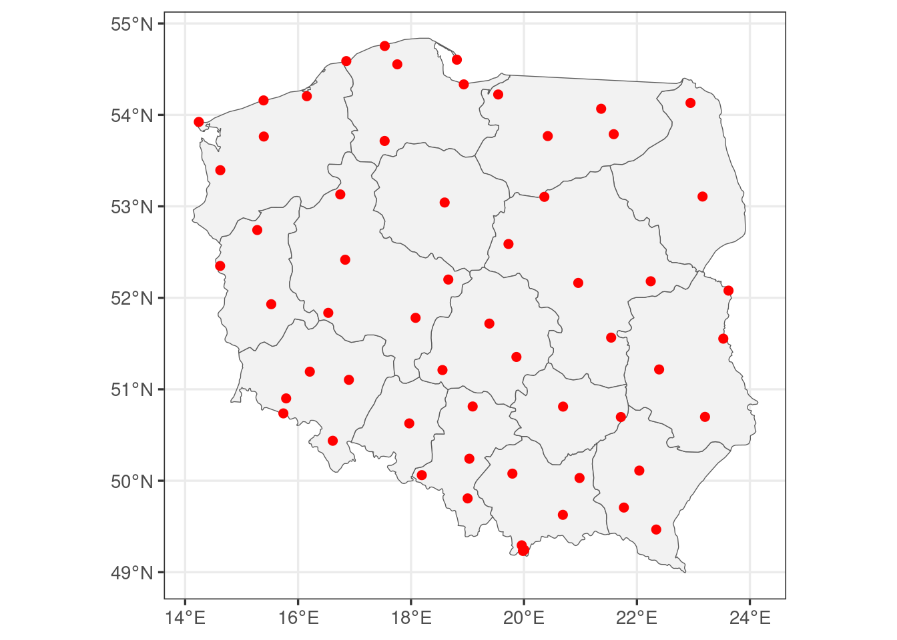
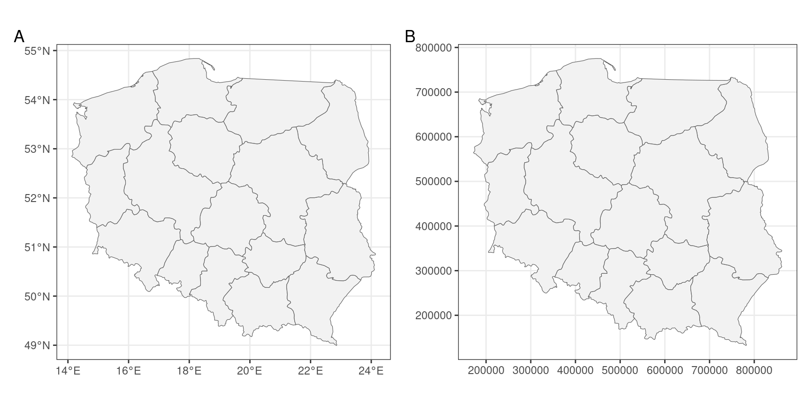
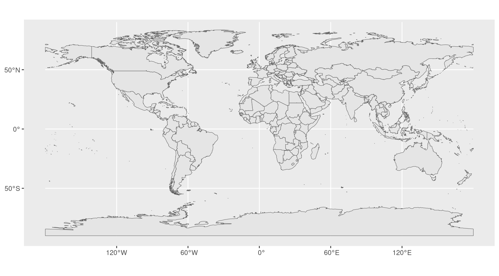
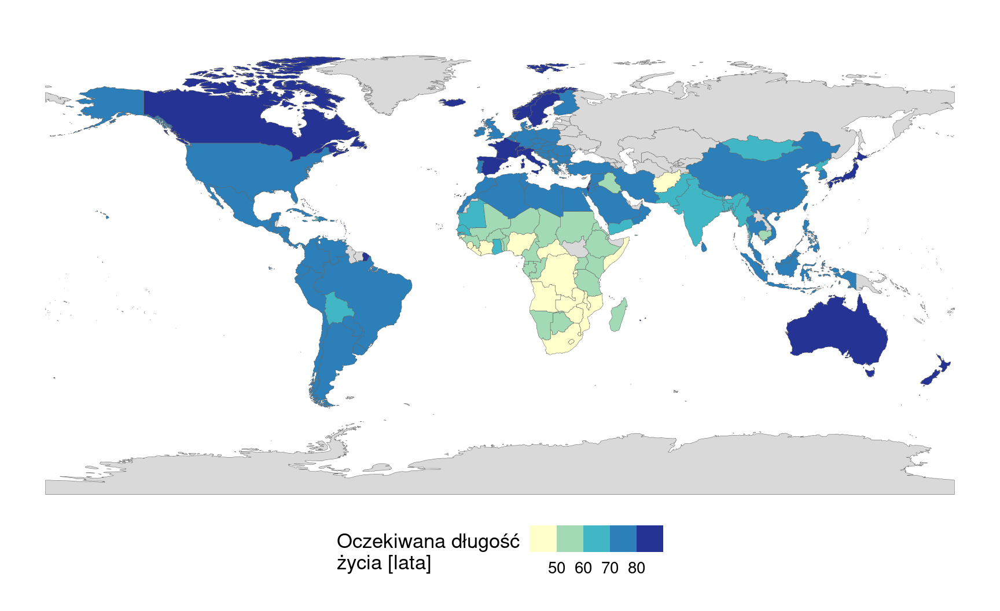
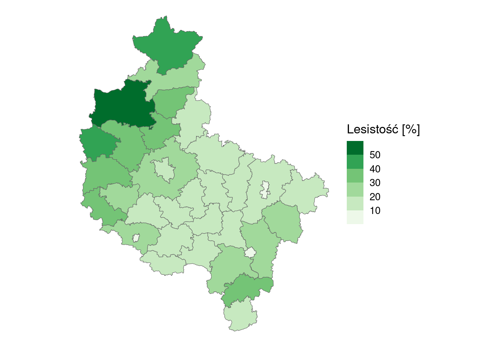
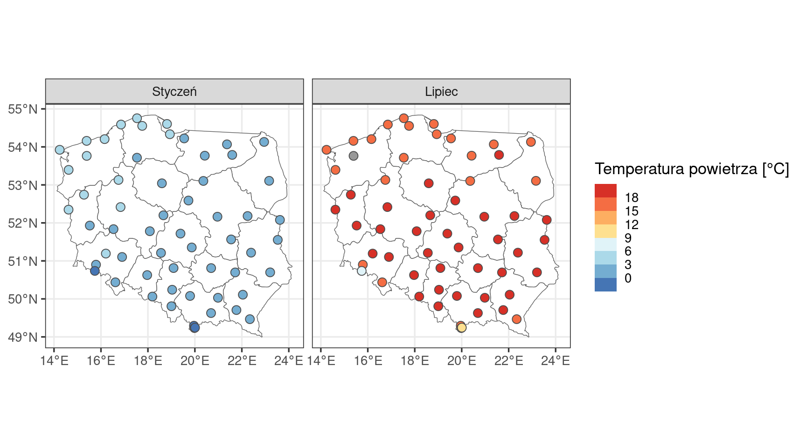
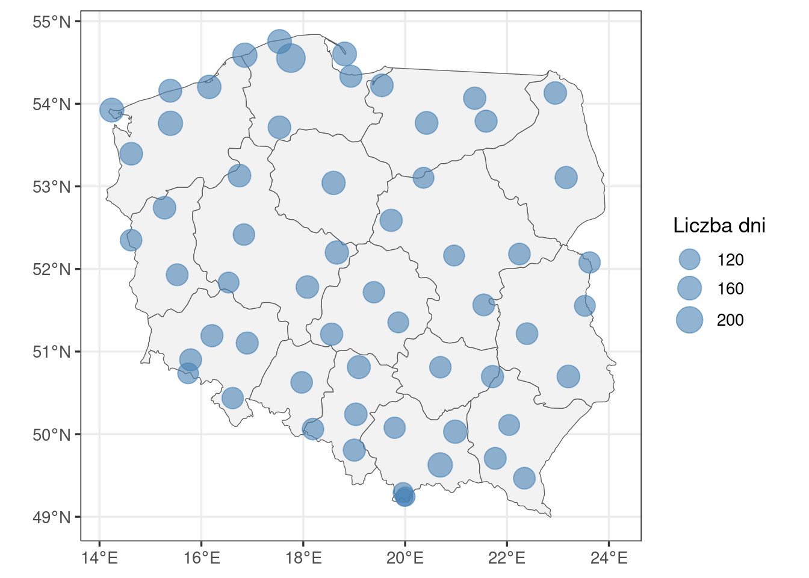
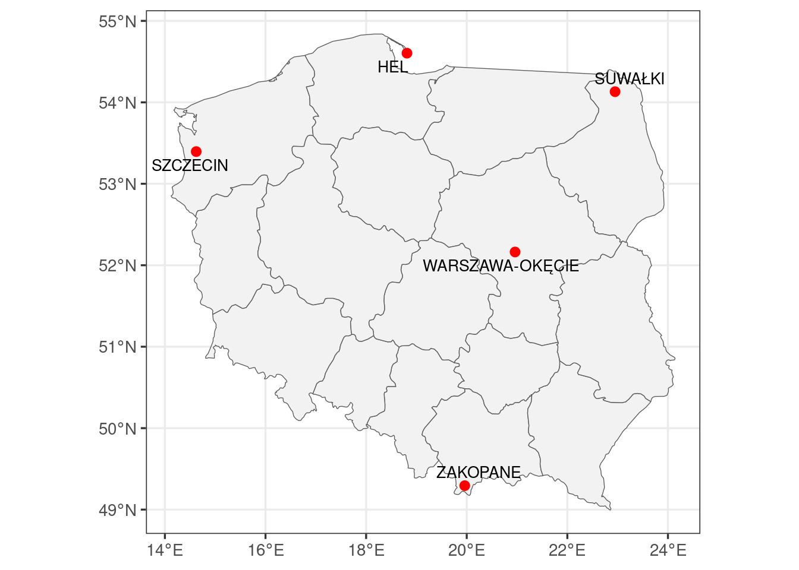
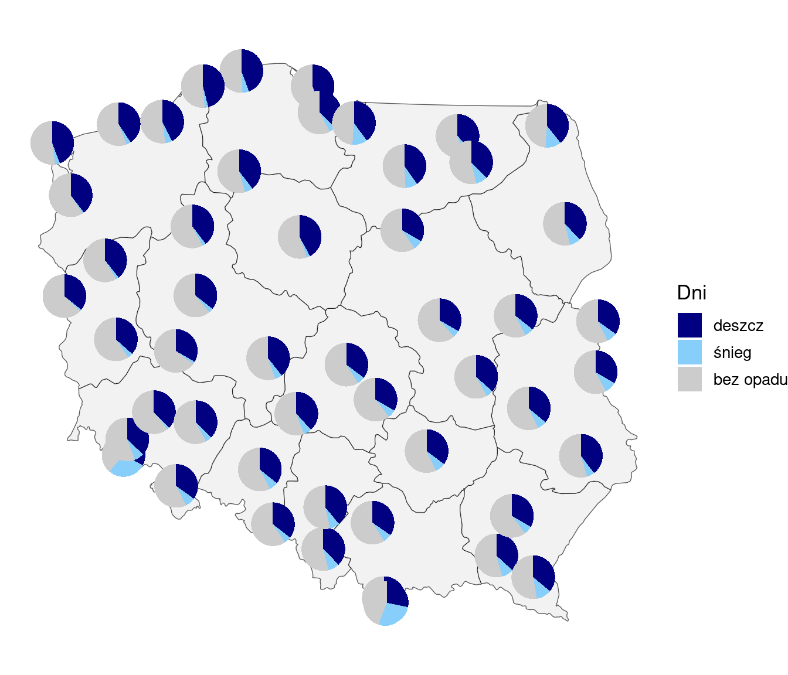
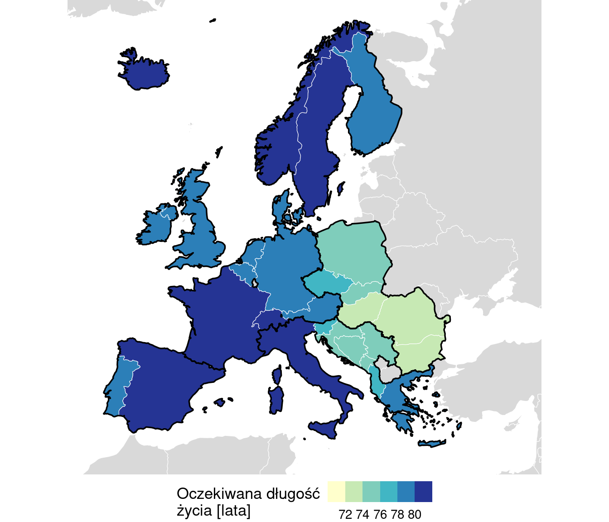

5 Dane przestrzenne w R
Dane przestrzenne opisują obiekty wraz z ich położeniem, np. państwa z granicami albo stacje meteorologiczne ze współrzędnymi. Rozdział przedstawia operacje wykorzystywane w skrypcie: wczytanie granic, zamianę tabeli ze współrzędnymi na punkty, połączenie granic z tabelą atrybutów i przeliczenie układu współrzędnych. Następnie pokazuje, jak z tych obiektów tworzyć mapy w ggplot2 (Rozdział 4). Nazwy typów map wyjaśnia Sekcja 14.7.
Kod rozdziału jest dostępny w pliku kod/05_dane_przestrzenne.qmd.
5.1 Obiekt sf
Pakiet sf przechowuje dane przestrzenne w postaci tabeli, w której każdy wiersz to jeden obiekt, a dodatkowa kolumna zawiera jego geometrię. Przykładem są granice 16 województw z pliku dane/wojewodztwa.gpkg (Natural Earth, domena publiczna).
# pakiety: tidyverse (przetwarzanie danych i wykresy), sf (dane przestrzenne)
library(tidyverse)
library(sf)
# wczytanie pliku z danymi przestrzennymi
wojewodztwa <- st_read("dane/wojewodztwa.gpkg", quiet = TRUE)
# nazwa i kod województwa w pierwszych trzech wierszach; kolumna geometrii pozostaje w wyniku
wojewodztwa |>
select(name_pl, iso_3166_2) |>
head(3)Simple feature collection with 3 features and 2 fields
Geometry type: MULTIPOLYGON
Dimension: XY
Bounding box: xmin: 18.01907 ymin: 48.99401 xmax: 23.65868 ymax: 51.03712
Geodetic CRS: WGS 84
name_pl iso_3166_2 geom
1 województwo śląskie PL-SL MULTIPOLYGON (((19.44887 49...
2 województwo małopolskie PL-MA MULTIPOLYGON (((19.86829 49...
3 województwo podkarpackie PL-PK MULTIPOLYGON (((22.53964 49...st_read()wczytuje plik z danymi przestrzennymi, tu w formacie GeoPackage (.gpkg). Argumentquiet = TRUEwyłącza komunikat o wczytanym pliku.- Nagłówek wyniku podaje liczbę obiektów i kolumn (features, fields), typ geometrii (Geometry type), zasięg przestrzenny (Bounding box) i układ współrzędnych (Geodetic CRS, Sekcja 5.5).
- Typ geometrii w skrypcie to
POINT(punkt, np. stacja),MULTIPOLYGON(obszar złożony z jednego lub wielu wielokątów, np. państwo z wyspami) alboGEOMETRY(różne typy w jednej warstwie, np.POLYGONiMULTIPOLYGONw granicach powiatów). - Kolumna geometrii ma tu nazwę
geom; w obiektach z pakietówrnaturalearthigeodatanazywa sięgeometry. Funkcjaselect()pozostawia ją w wyniku także wtedy, gdy nie ma jej na liście kolumn. - Obiekt
sfprzetwarza się tymi samymi funkcjami co zwykłą tabelę, np.filter(),select(),mutate()(Rozdział 3). Wynik pozostaje obiektemsf.
5.2 Wczytanie granic
Skrypt korzysta z trzech źródeł granic:
| Granice | Źródło | Funkcja | Przykład w skrypcie |
|---|---|---|---|
| województwa | plik dane/wojewodztwa.gpkg |
st_read() |
Sekcja 22.3 |
| państwa świata | pakiet rnaturalearth |
ne_countries() |
Sekcja 21.5 |
| powiaty | baza GADM, pakiet geodata |
gadm() + st_as_sf() |
Sekcja 26.2 |
# pakiety z granicami: państwa świata (Natural Earth) i jednostki administracyjne (GADM)
library(rnaturalearth)
library(geodata)
# granice państw świata jako obiekt sf
swiat <- ne_countries(scale = "medium", returnclass = "sf")
# granice powiatów Polski: zapis w folderze granice/ i zamiana na obiekt sf
granice_powiatow <- gadm(country = "POL", level = 2, path = "granice/") |>
st_as_sf()
nrow(swiat)[1] 242nrow(granice_powiatow)[1] 380ne_countries()zwraca granice państw jako obiektsf(returnclass = "sf"). Szczegółowośćscale = "medium"wymaga pakieturnaturalearthdata.gadm()przy pierwszym uruchomieniu pobiera plik z serwera i zapisuje go w folderze podanym wpath; warunki korzystania z bazy GADM opisuje Sekcja 26.2. Argumentlevelokreśla poziom podziału administracyjnego: dla Polski2oznacza powiaty.gadm()zwraca obiekt klasySpatVectorz pakietuterra.st_as_sf()zamienia go na obiektsf.
5.3 Współrzędne w tabeli: zamiana na punkty
Plik dane/meteo2020.csv (źródło: IMGW-PIB, opis: Sekcja 22.2) jest zwykłą tabelą: kolumny X_dlugosc_geogr i Y_szerokosc_geogr zawierają współrzędne geograficzne stacji. Tabela ma 708 wierszy, po 12 dla każdej z 59 stacji, dlatego potok najpierw oblicza wartości roczne.
# wczytanie danych meteorologicznych
meteo <- read.csv("dane/meteo2020.csv", encoding = "UTF-8")
# jeden wiersz dla stacji: roczna suma opadu i liczba dni z deszczem i ze śniegiem
stacje <- meteo |>
group_by(stacja, X_dlugosc_geogr, Y_szerokosc_geogr) |>
summarise(opad_rok = sum(opad_suma),
dni_deszcz_rok = sum(dni_deszcz),
dni_snieg_rok = sum(dni_snieg),
.groups = "drop")
# zamiana tabeli na obiekt sf: punkty o współrzędnych geograficznych
stacje_sf <- st_as_sf(stacje,
coords = c("X_dlugosc_geogr", "Y_szerokosc_geogr"),
crs = 4326)
stacje_sf |>
select(stacja, opad_rok) |>
head(3)Simple feature collection with 3 features and 2 fields
Geometry type: POINT
Dimension: XY
Bounding box: xmin: 17.53263 ymin: 49.80671 xmax: 23.16228 ymax: 53.7152
Geodetic CRS: WGS 84
# A tibble: 3 × 3
stacja opad_rok geometry
<chr> <dbl> <POINT [°]>
1 BIAŁYSTOK 640. (23.16228 53.10726)
2 BIELSKO-BIAŁA 1182. (19.00234 49.80671)
3 CHOJNICE 574. (17.53263 53.7152)st_as_sf()tworzy obiektsfze zwykłej tabeli. Argumentcoordswskazuje kolumny ze współrzędnymi w kolejności: najpierw długość geograficzna (x), potem szerokość geograficzna (y).crs = 4326podaje układ współrzędnych, w którym zapisano wartości w tabeli (Sekcja 5.5).- Kolumny ze współrzędnymi zostają zastąpione kolumną
geometryz punktami. .groups = "drop"wsummarise()usuwa podział na grupy po obliczeniach.
geom_sf() rysuje obiekt sf, a mapa powstaje z warstw, z których każda ma własne dane (Rycina 5.1).
# dwie warstwy: granice województw i punkty stacji
ggplot() +
geom_sf(data = wojewodztwa, fill = "grey95") +
geom_sf(data = stacje_sf, colour = "red", size = 2) +
theme_bw(base_size = 13)
5.4 Łączenie granic z tabelą atrybutów
Granice i wartości zmiennych znajdują się zwykle w osobnych tabelach. Łączy je klucz: kolumna z tym samym identyfikatorem w obu tabelach (Sekcja 3.10), np. kod kraju ISO 3166 alfa-3.
# dane Gapminder z 2007 roku: 142 kraje
dane <- read.csv("dane/gapminder_regions.csv", encoding = "UTF-8")
dane2007 <- dane |>
filter(year == 2007)
# granice jako pierwsza tabela: wynik pozostaje obiektem sf
mapa <- swiat |>
left_join(dane2007, by = c("iso_a3_eh" = "Kod"))
# liczba wierszy wyniku i liczba wierszy z dołączonymi danymi
nrow(mapa)[1] 242sum(!is.na(mapa$lifeExp))[1] 143sum(!is.na(mapa$lifeExp))zlicza wiersze z dołączonymi danymi:is.na()sprawdza, czy wartość jest brakiem danych,!oznacza zaprzeczenie, asum()zlicza wartościTRUE.by = c("iso_a3_eh" = "Kod")wskazuje klucz: kolumnaiso_a3_ehtabeli granic odpowiada kolumnieKodtabeli danych.- Kolejność tabel decyduje o typie wyniku. Jeżeli pierwszą tabelą jest obiekt
sf, wynik jest obiektemsf. Jeżeli pierwszą tabelą jest zwykła tabela, wynik jest zwykłą tabelą igeom_sf()zgłasza błąd (Sekcja 5.9). left_join()zachowuje wszystkie wiersze tabeli granic: wynik ma 242 wiersze, tyle coswiat, a obszary bez odpowiednika w danych mają w dołączonych kolumnach brak wartości (NA). Na mapie mają one kolor podany wna.value(Sekcja 5.7.2).inner_join()pozostawia tylko wiersze obecne w obu tabelach. Stosuje się go, gdy mapa ma obejmować wyłącznie obiekty ze zbioru danych (Sekcja 23.4.1).- Liczbę dopasowanych wierszy warto porównać z liczbą obserwacji w tabeli danych. Tu 143 wiersze mają dane, chociaż tabela zawiera 142 kraje: kod
AUSwystępuje w tabeli granic w trzech wierszach (Australia i dwa terytoria zależne), a kodu Reunionu tabela granic nie zawiera. - Klucze muszą mieć tę samą postać. Kod powiatu w granicach GADM ma 4 cyfry, a w danych GUS 7 cyfr, dlatego przed połączeniem trzeba go przekształcić (Sekcja 5.6).
- Gdy tabela danych ma kilka wierszy dla jednego obiektu, np. dwa lata dla kraju, wynik ma tyle samo wierszy dla tego obiektu. Rok można wtedy wykorzystać do podziału na panele (Sekcja 23.4.1).
5.5 Układ współrzędnych
Układ współrzędnych (ang. coordinate reference system, CRS) określa, co oznaczają liczby opisujące położenie. Układy oznacza się kodami EPSG. Skrypt wykorzystuje trzy układy:
| Kod EPSG | Układ | Jednostka | Zastosowanie w skrypcie |
|---|---|---|---|
| 4326 | współrzędne geograficzne WGS 84 | stopnie | współrzędne w tabeli, granice ze wszystkich trzech źródeł |
| 2180 | PUWG 1992 | metry | Polska: kartodiagram strukturalny (Sekcja 22.5.3), powierzchnia powiatów (Sekcja 26.2) |
| 3035 | odwzorowanie azymutalne równopolowe Lamberta dla Europy | metry | mapy Europy (Sekcja 23.4.1) |
Układ współrzędnych można zmienić na dwa sposoby:
st_transform()przelicza współrzędne obiektu do innego układu. Stosuje się go, gdy obliczenia wymagają współrzędnych w metrach (Sekcja 5.6).coord_sf(crs = )ustala układ, w którym rysowana jest mapa, bez zmiany obiektu. Bez tego argumentuggplot2stosuje układ pierwszej warstwysf.
# pakiet do łączenia wykresów w jedną rycinę
library(patchwork)
p_4326 <- ggplot(wojewodztwa) +
geom_sf(fill = "grey95") +
theme_bw(base_size = 11)
p_2180 <- ggplot(wojewodztwa) +
geom_sf(fill = "grey95") +
coord_sf(crs = 2180, datum = 2180) + # rysowanie i siatka w układzie PUWG 1992
theme_bw(base_size = 11)
p_4326 + p_2180 + plot_annotation(tag_levels = "A")
Układ rysowania zmienia kształt mapy (Rycina 5.2). ggplot2 domyślnie opisuje siatkę we współrzędnych geograficznych (datum = st_crs(4326)), dlatego argument datum = 2180 jest potrzebny, aby siatka i opisy osi na rycinie B podawały metry układu PUWG 1992.
5.6 Obliczenia na obiektach sf
Lesistość powiatów (Sekcja 26.2) wymaga połączenia granic z danymi i obliczenia powierzchni powiatu, dlatego potok łączy kilka opisanych wyżej operacji.
# powierzchnia lasów w powiatach; kod TERYT wczytany jako tekst, aby zachować zero na początku
lasy <- read.csv("dane/lasy_bld.csv", sep = ";", dec = ",", encoding = "UTF-8",
colClasses = c(Kod = "character")) |>
select(Kod, Nazwa, lasy2025)
# granice połączone z danymi, wybór województwa i obliczenie lesistości
powiaty <- granice_powiatow |>
mutate(Kod = paste0(CC_2, "000")) |> # 7-cyfrowy kod, jak w tabeli lasy
left_join(lasy, by = "Kod") |>
filter(NAME_1 == "Wielkopolskie") |>
st_transform(2180) |> # układ współrzędnych w metrach
mutate(pow_ha = as.numeric(st_area(geometry)) / 10000, # powierzchnia: m² → ha
lesistosc = lasy2025 / pow_ha * 100) # lesistość [%]
# statystyki opisowe: usunięcie geometrii przed obliczeniami
powiaty |>
st_drop_geometry() |>
summarise(liczba = n(), srednia = mean(lesistosc), mediana = median(lesistosc)) liczba srednia mediana
1 35 22.80963 19.80417- Argumenty
sep,dec,encodingicolClassesopisuje Sekcja 3.12. paste0(CC_2, "000")dopisuje trzy zera do kodu powiatu i tworzy klucz w tej samej postaci co w tabelilasy.st_area()oblicza powierzchnię każdego obiektu. Wynik ma przypisaną jednostkę ([m^2]), którą usuwaas.numeric(); dzielenie przez 10 000 zamienia m² na hektary.st_drop_geometry()usuwa kolumnę geometrii i zwraca zwykłą tabelę.summarise()zastosowana do obiektusfłączy także geometrie obiektów, a statystyki opisowe tego nie wymagają.
5.7 Mapy w ggplot2
geom_sf() pobiera położenie z kolumny geometrii, dlatego mapowanie nie zawiera x ani y. Pozostałe cechy graficzne (estetyki) działają jak na wykresie: fill — wypełnienie obszaru, colour — kolor linii albo punktu, size — wielkość punktu. Kolejność warstw decyduje o tym, co jest widoczne: późniejsza warstwa leży nad wcześniejszą. Kolory i skale opisuje Rozdział 18.
5.7.1 Najprostsza mapa
Najprostsza mapa składa się z funkcji ggplot() z obiektem sf i warstwy geom_sf(), bez dodatkowych opcji (Rycina 5.3).
# obiekt sf jako dane i jedna warstwa
ggplot(mapa) +
geom_sf()
ggplot(mapa)wskazuje obiektsfjako dane, ageom_sf()rysuje jego geometrię.- Kolor wypełnienia, kolor granic, osie i siatkę współrzędnych określają tu ustawienia domyślne
ggplot2. Kolejne sekcje zmieniają je za pomocą mapowań, skal i motywów.
5.7.2 Mapa: kolor obszaru
# kolor państwa odpowiada klasie oczekiwanej długości życia
ggplot(mapa) +
geom_sf(aes(fill = lifeExp), colour = "grey40", linewidth = 0.1) +
scale_fill_fermenter(breaks = c(50, 60, 70, 80), # granice klas
palette = "YlGnBu", # paleta sekwencyjna Brewer
direction = 1, # ciemniejszy kolor = wyższa wartość
na.value = "grey85") + # kolor obszarów bez danych
labs(fill = "Oczekiwana długość\nżycia [lata]") +
theme_void(base_size = 13) + # motyw bez osi i siatki
theme(legend.position = "bottom")
scale_fill_fermenter()dzieli wartości na klasy podczas rysowania mapy. Wartości wbreaksto granice klas.colourilinewidthustalają kolor i grubość linii granic. Znak\nw tytule legendy oznacza nowy wiersz.- Zastosowanie: Sekcja 21.5.
5.7.3 Kartogram: wartość względna w obszarze
Lesistość jest wartością względną: odnosi powierzchnię lasów do powierzchni powiatu. Mapę z taką wartością nazywa się kartogramem (Sekcja 14.7).
ggplot(powiaty) +
geom_sf(aes(fill = lesistosc), colour = "grey40", linewidth = 0.2) +
scale_fill_fermenter(breaks = seq(10, 50, by = 10), # granice klas co 10%
palette = "Greens", direction = 1) +
labs(fill = "Lesistość [%]") +
theme_void(base_size = 13)
seq(10, 50, by = 10) tworzy ciąg granic klas od 10 do 50 co 10. Zastosowanie: Sekcja 26.4.1.
5.7.4 Mapa: kolor punktu
Wartość przypisana do punktu może określać jego kolor, a facet_wrap() dzieli mapę na panele.
# obserwacje ze stycznia i lipca jako punkty na mapie
styczen_lipiec <- meteo |>
filter(miesiac %in% c(1, 7)) |>
st_as_sf(coords = c("X_dlugosc_geogr", "Y_szerokosc_geogr"), crs = 4326)
ggplot() +
geom_sf(data = wojewodztwa, fill = "white") +
geom_sf(data = styczen_lipiec, aes(fill = temp_sr),
shape = 21, colour = "grey30", size = 3) + # punkt z obwódką
facet_wrap(~ miesiac, labeller = as_labeller(c(`1` = "Styczeń", `7` = "Lipiec"))) +
scale_fill_fermenter(breaks = seq(0, 18, by = 3),
palette = "RdYlBu", direction = -1,
na.value = "grey60") + # stacja bez danych
labs(fill = "Temperatura powietrza [°C]") +
theme_bw(base_size = 13)
shape = 21to punkt z wypełnieniem i obwódką: wypełnienie określafill, a obwódkęcolour.as_labeller()w argumencielabellerzastępuje wartości1i7w nagłówkach paneli nazwami miesięcy.- Warstwa
wojewodztwanie ma kolumnymiesiac, dlatego powtarza się w obu panelach. - Zastosowanie: Sekcja 22.4, Sekcja 22.5.
5.7.5 Kartodiagram: wielkość znaku
ggplot() +
geom_sf(data = wojewodztwa, fill = "grey95") +
geom_sf(data = stacje_sf, aes(size = dni_deszcz_rok), colour = "steelblue", alpha = 0.6) +
scale_size_area(max_size = 8) + # pole punktu proporcjonalne do wartości
labs(size = "Liczba dni") +
theme_bw(base_size = 13)
- Mapowanie
sizenadaje punktom wielkość zależną od wartości.scale_size_area(max_size = )ustala pole punktu proporcjonalne do wartości (wartość 0 ma wielkość 0) i największą wielkość punktu, aalpha— przezroczystość nachodzących punktów. - Zastosowanie: Sekcja 22.5.3.
5.7.6 Etykiety na mapie
# pakiet do rozmieszczania etykiet bez nakładania się
library(ggrepel)
wybrane <- stacje_sf |>
filter(stacja %in% c("HEL", "SUWAŁKI", "SZCZECIN", "WARSZAWA-OKĘCIE", "ZAKOPANE"))
ggplot() +
geom_sf(data = wojewodztwa, fill = "grey95") +
geom_sf(data = wybrane, colour = "red", size = 2.5) +
geom_text_repel(data = wybrane, aes(label = stacja, geometry = geometry),
stat = "sf_coordinates", size = 3.5) +
labs(x = NULL, y = NULL) +
theme_bw(base_size = 13)
geom_text_repel()z pakietuggrepelprzesuwa etykiety tak, aby nie nachodziły na siebie ani na punkty.labs(x = NULL, y = NULL)usuwa opisy osi.stat = "sf_coordinates"pobiera położenie etykiet z kolumny geometrii, wskazanej w mapowaniugeometry.- Zastosowanie: Sekcja 22.3, Sekcja 25.2.3.
5.7.7 Kartodiagram strukturalny: wykresy kołowe
Kartodiagram strukturalny przedstawia strukturę zjawiska w położeniu obiektu, tu: podział roku na dni z deszczem, ze śniegiem i bez opadu (GUS, 2014, Graficzna prezentacja danych statystycznych, podrozdz. 4.2.9). geom_scatterpie() z pakietu scatterpie rysuje koła we współrzędnych danych. We współrzędnych geograficznych koła byłyby spłaszczone, dlatego punkty przelicza się do układu metrycznego, a ich współrzędne zapisuje w zwykłych kolumnach.
library(scatterpie)
# stacje z kompletem danych; liczba dni bez opadu (2020 — rok przestępny, 366 dni)
struktura <- stacje_sf |>
filter(!is.na(dni_snieg_rok)) |>
mutate(dni_bez_opadu_rok = 366 - dni_deszcz_rok - dni_snieg_rok)
# współrzędne punktów w układzie PUWG 1992 i zwykła tabela bez geometrii
xy <- st_coordinates(st_transform(struktura, 2180))
struktura <- struktura |>
st_drop_geometry() |>
mutate(x = xy[, 1], y = xy[, 2])
ggplot() +
geom_sf(data = st_transform(wojewodztwa, 2180), fill = "grey95") +
geom_scatterpie(data = struktura, aes(x = x, y = y),
cols = c("dni_deszcz_rok", "dni_snieg_rok", "dni_bez_opadu_rok"),
pie_scale = 2, colour = NA) +
scale_fill_manual(values = c(dni_deszcz_rok = "navy", dni_snieg_rok = "lightskyblue",
dni_bez_opadu_rok = "grey80"),
labels = c("deszcz", "śnieg", "bez opadu")) +
labs(fill = "Dni") +
coord_sf(crs = 2180) +
theme_void(base_size = 13)
st_coordinates()zwraca współrzędne punktów w postaci macierzy: pierwsza kolumna to x, druga to y.xy[, 1]wybiera pierwszą kolumnę.colswskazuje kolumny z wartościami, apie_scalewielkość kół.- Zastosowanie: Sekcja 22.5.3.
5.7.8 Wycinek mapy i połączone obszary
Mapa Europy (Rycina 5.10) ma trzy warstwy: wszystkie państwa w tle, kraje ze zbioru danych i obrysy subregionów. Zasięg mapy ogranicza coord_sf().
# tylko kraje Europy ze zbioru danych
mapa_europa <- swiat |>
inner_join(filter(dane2007, kontynent == "Europa"), by = c("iso_a3_eh" = "Kod"))
# jeden obszar dla każdego subregionu
subregiony <- mapa_europa |>
group_by(subregion_pl) |>
summarise(geometry = st_union(geometry))
ggplot() +
geom_sf(data = swiat, fill = "grey85", colour = "white", linewidth = 0.2) +
geom_sf(data = mapa_europa, aes(fill = lifeExp), colour = "white", linewidth = 0.2) +
geom_sf(data = subregiony, fill = NA, colour = "black", linewidth = 0.6) +
scale_fill_fermenter(breaks = c(72, 74, 76, 78, 80),
palette = "YlGnBu", direction = 1,
limits = c(70, 82)) + # zakres skali obejmujący wszystkie klasy
coord_sf(crs = 3035, # odwzorowanie dla Europy
xlim = c(2500000, 6500000), ylim = c(1400000, 5400000)) + # zasięg mapy [m]
labs(fill = "Oczekiwana długość\nżycia [lata]") +
theme_void(base_size = 13) +
theme(legend.position = "bottom")
st_union()scala geometrie w jeden obiekt: granice między krajami znikają i zostaje obrys. Razem zgroup_by()isummarise()tworzy jeden obiektsfz obszarem dla każdego subregionu.fill = NAoznacza brak wypełnienia, dzięki czemu kolory krajów pozostają widoczne.xlimiylimsą podane w jednostkach układu z argumentucrs, tu w metrach.limitsustala zakres skali. Bez niego zakres wynika z danych, a granica klasy leżąca poza tym zakresem nie jest uwzględniana w legendzie.- Zastosowanie: Sekcja 23.4.1.
5.8 Zestawienie map w skrypcie
| Mapa | Dane i układ współrzędnych | Najważniejsze elementy kodu | Przykład w skrypcie |
|---|---|---|---|
| kolor obszaru | ne_countries(), WGS 84 |
left_join(), geom_sf(aes(fill = )) |
Sekcja 21.5 |
| kolor obszaru, wycinek, panele | ne_countries(), EPSG 3035 |
inner_join(), st_union(), coord_sf(crs, xlim, ylim), facet_wrap() |
Sekcja 23.4.1 |
| kartogram | GADM, EPSG 2180 | left_join(), st_transform(), st_area(), geom_sf(aes(fill = )) |
Sekcja 26.4.1 |
| położenie stacji z etykietami | tabela ze współrzędnymi, plik .gpkg |
st_as_sf(), st_read(), geom_text_repel() |
Sekcja 22.3 |
| kolor punktu | tabela ze współrzędnymi, plik .gpkg |
geom_sf(aes(fill = ), shape = 21) |
Sekcja 22.4, Sekcja 22.5 |
| kartodiagram: wielkość znaku | tabela ze współrzędnymi, plik .gpkg |
geom_sf(aes(size = )) |
Sekcja 22.5.3 |
| kartodiagram strukturalny: wykresy kołowe | tabela ze współrzędnymi, EPSG 2180 | st_transform(), st_coordinates(), geom_scatterpie() |
Sekcja 22.5.3 |
5.9 Najczęstsze błędy
| Komunikat albo objaw | Przyczyna | Przykład błędnego zapisu |
|---|---|---|
`stat_sf()` requires the following missing aesthetics: geometry |
geom_sf() otrzymał zwykłą tabelę, np. wynik połączenia z tabelą danych na pierwszym miejscu |
left_join(dane2007, swiat, …) zamiast left_join(swiat, dane2007, …) |
missing values in coordinates not allowed |
brak wartości w kolumnie ze współrzędnymi | st_as_sf() na tabeli z NA w kolumnie współrzędnych |
Can't subset columns that don't exist |
błąd w nazwie kolumny ze współrzędnymi | coords = c("X", "Y") przy innych nazwach kolumn |
cannot transform sfc object with missing crs |
obiekt bez układu współrzędnych | st_as_sf() bez argumentu crs, a potem st_transform() |
| punkty poza obszarem mapy | zamieniona kolejność długości i szerokości geograficznej | coords = c("Y_szerokosc_geogr", "X_dlugosc_geogr") |
| wszystkie obszary w kolorze braku danych | klucze w obu tabelach mają inną postać | kod 4-cyfrowy w jednej tabeli i 7-cyfrowy w drugiej |
5.10 Zadania do samodzielnego wykonania
Zadania polegają na modyfikacji kodu z rozdziału i wykonuje się je w przeglądarce, bez instalowania R. Kod w polu można zmienić i uruchomić przyciskiem Run Code. Pierwsze uruchomienie pobiera środowisko R i pakiety, dlatego trwa dłużej i wymaga połączenia z internetem; jeżeli po kliknięciu wynik się nie pojawia, należy odczekać i kliknąć przycisk ponownie. Rozwiązanie wyświetla przycisk Show Solution.
Zadanie 1. Inny układ współrzędnych. Narysuj mapę w układzie PUWG 1992 z siatką opisaną w metrach (Sekcja 5.5): dodaj warstwę coord_sf() z argumentami crs i datum.
ggplot() +
geom_sf(data = wojewodztwa, fill = "grey95") +
geom_sf(data = stacje_sf, colour = "red", size = 2) +
coord_sf(crs = 2180, datum = 2180) +
theme_bw(base_size = 13)Zadanie 2. Inne miesiące. Wykonaj mapę średniej temperatury dla kwietnia i października. Zmień numery miesięcy w filter() i nazwy paneli w as_labeller().
kwiecien_pazdziernik <- meteo |>
filter(miesiac %in% c(4, 10)) |>
st_as_sf(coords = c("X_dlugosc_geogr", "Y_szerokosc_geogr"), crs = 4326)
ggplot() +
geom_sf(data = wojewodztwa, fill = "white") +
geom_sf(data = kwiecien_pazdziernik, aes(fill = temp_sr),
shape = 21, colour = "grey30", size = 3) +
facet_wrap(~ miesiac, labeller = as_labeller(c(`4` = "Kwiecień", `10` = "Październik"))) +
scale_fill_fermenter(breaks = seq(0, 18, by = 3),
palette = "RdYlBu", direction = -1,
na.value = "grey60") +
labs(fill = "Temperatura powietrza [°C]") +
theme_bw(base_size = 13)Zadanie 3. Inna zmienna na mapie. Przedstaw kolorem punktu roczną sumę opadu (opad_rok) zamiast rocznej liczby dni z deszczem. Dobierz granice klas do zakresu nowej zmiennej, np. seq(500, 1000, by = 100), i zmień tytuł legendy.
ggplot() +
geom_sf(data = wojewodztwa, fill = "white") +
geom_sf(data = stacje_sf, aes(fill = opad_rok),
shape = 21, colour = "grey30", size = 3) +
scale_fill_fermenter(breaks = seq(500, 1000, by = 100),
palette = "Blues", direction = 1) +
labs(fill = "Suma opadu [mm]") +
theme_bw(base_size = 13)Zadanie 4. Kartodiagram innej zmiennej. Wykonaj kartodiagram rocznej liczby dni ze śniegiem (dni_snieg_rok) zamiast dni z deszczem. Stacje bez danych pomiń, zastępując stacje_sf zapisem filter(stacje_sf, !is.na(dni_snieg_rok)).
ggplot() +
geom_sf(data = wojewodztwa, fill = "grey95") +
geom_sf(data = filter(stacje_sf, !is.na(dni_snieg_rok)),
aes(size = dni_snieg_rok), colour = "steelblue", alpha = 0.6) +
scale_size_area(max_size = 8) +
labs(size = "Liczba dni") +
theme_bw(base_size = 13)5.11 Źródła
- Dokumentacja pakietu
sf: https://r-spatial.github.io/sf/. - Dokumentacja
geom_sf()icoord_sf(): https://ggplot2.tidyverse.org/reference/ggsf.html. - Natural Earth (domena publiczna): https://www.naturalearthdata.com/.
- GADM: https://gadm.org/.
- Główny Urząd Statystyczny (GUS), 2014. Graficzna prezentacja danych statystycznych. Wykresy, mapy, GIS. Warszawa, podrozdział 4.2.9: metoda kartodiagramu.